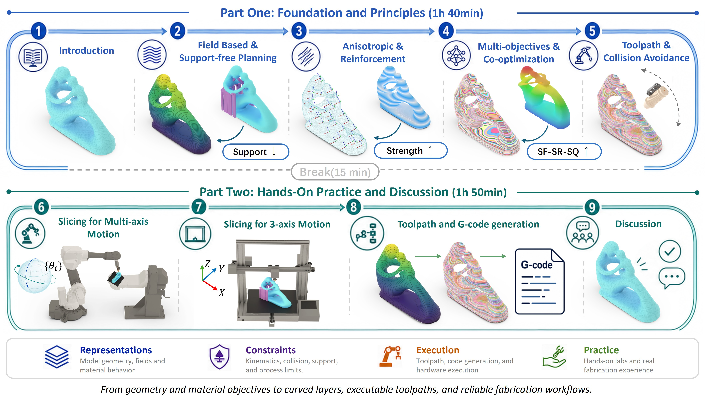
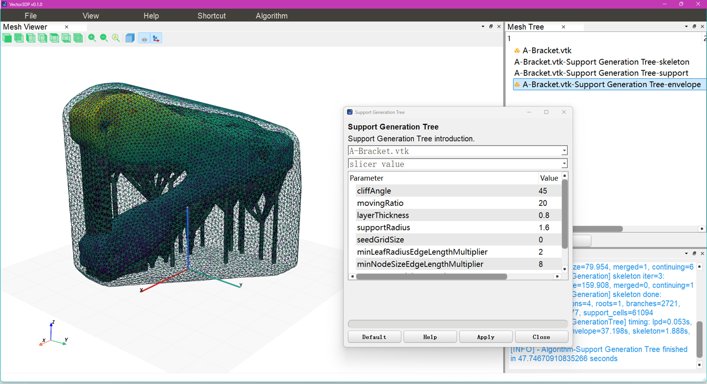
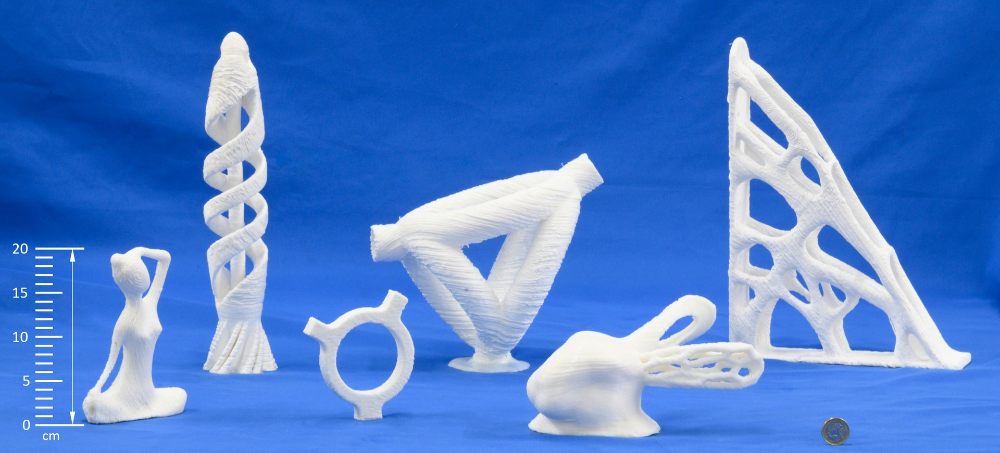
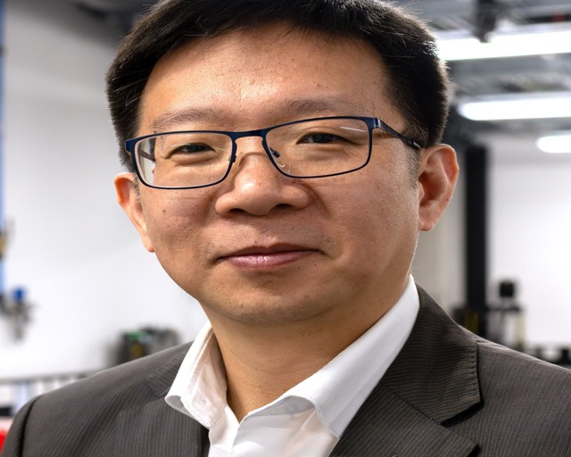
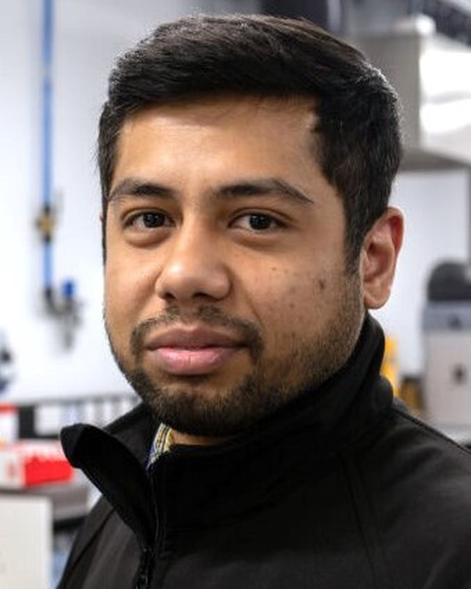
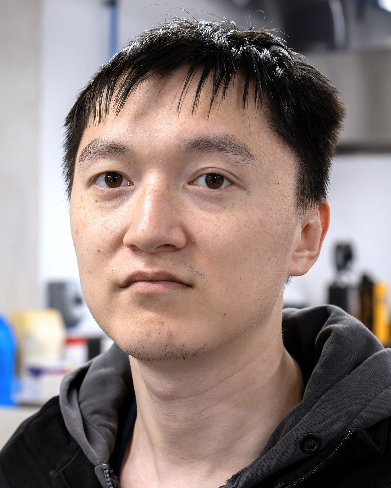

Introduction. Importance and impact of multi-axis 3D printing, the design-to-fabrication workflow, and links to motion planning and inverse kinematics. Presenter: Wang
SIGGRAPH Asia 2026
Courses · Kuala Lumpur · 1-4 Dec 2026
Computational Fabrication with Multi-Axis 3D Printing
Foundations and Hands-on Practice
From geometry and material objectives to curved layers, executable toolpaths, and reliable fabrication workflows.

Content and Results
Representative visuals for the methods covered in the course.

.jpg)
Printing Result
Physical fabrication examples produced with multi-axis printing workflows.
Printed results show freeform deposition on complex geometries, highlighting the role of curved layers, support-aware planning, and executable toolpaths in reliable fabrication.

Agenda
3h 45m course format
The course includes a 1h 40m tutorial session, a 15-minute break, and a 1h 50m hands-on practice and discussion session.
Support-free planning. Region-based and field-based decomposition strategies, scalar-field layer and toolpath generation, and IK optimization challenges. Presenter: Dai
Anisotropic mechanical property and reinforcement. Vector-field control of anisotropy, filament alignment, material orientation, reinforcement goals, and fiber-reinforced thermoplastics. Presenter: Fang
Multi-objectives and design-fabrication co-optimization. Deformation-based curved-layer planning, neural formulations, and end-to-end design-fabrication co-optimization. Presenter: Liu
Direct control over collision avoidance and toolpath geometry. Accessibility, clearance, SDF-based collision checking, neural implicit fields, and support/orientation-aware optimization. Presenter: Dutta
Wrap-up. Recent developments including learning-based path planning, in-situ control, multi-axis DLP printing, hybrid manufacturing, and hands-on briefing. Presenter: Wang
Break. Attendees begin downloading the Python-based open-source Vector3DP platform from the Digital Manufacturing Lab.
Environment setup. Download the slicer code, configure the runtime, and review modules for loading conditions, FEA, visualization, collision checking, and result verification. Presenters: Liu and Dutta
Slicing for 5-axis motion. Generate curved layers for collision-free and support-free slicing, compare ablation settings, and adjust support-free constraints and printhead geometry. Presenters: Fang and Dutta
Slicing for 3-axis motion. Generate curved layers for fixed-nozzle 3D printing, modify printhead geometry, and compare mechanically guided curved layers with planar layers. Presenters: Liu and Dutta
Toolpath and G-code generation. Generate toolpaths on curved layers and produce G-code with inverse kinematics for both 5-axis and 3-axis cases. Presenters: Liu and Dutta
Machine-related parameters. Adjust slicer parameters for different machine configurations and demonstrate real-time hardware printing using prepared G-code. Presenters: Liu and Dutta
Discussion and wrap-up. Open problems in robustness, verification, material-aware slicing, machine constraints, and software accessibility. Presenters: all
Course Presenters
Course presenters.
The course will be delivered by a team of five presenters. Short biographies of the presenters are provided below.

CWCharlie C.L. Wang
Charlie C.L. Wang is Professor as Chair in Smart Manufacturing and Director of the Digital Manufacturing Lab at The University of Manchester. His research spans geometric computing, computational design, additive manufacturing, robot-assisted fabrication, and digital manufacturing. His work has transformed the integration of design, analysis, and fabrication by establishing geometric computing and optimization as foundations for intelligent engineering across additive and hybrid manufacturing.
Chengkai Dai
Chengkai Dai is a Postdoctoral Fellow in the Personalized Design and Fabrication Lab at the Centre for Perceptual and Interactive Intelligence, The Chinese University of Hong Kong, working with Professor Yeung Yam and previously supervised by Professor Charlie C.L. Wang. His research focuses on computational fabrication, additive manufacturing, and textile-based fabrication, including multi-axis slicing, robotic motion planning, and knitting and weaving algorithms for functional-fiber sensing interfaces and robotic skins.
 GF
GF
Guoxin Fang
Guoxin Fang is an Assistant Professor in the Department of Mechanical and Automation Engineering at The Chinese University of Hong Kong. He leads the Computational Robotics and Manufacturing Lab, exploring geometry computing, physical modeling, and artificial intelligence for robotics, advanced manufacturing, and smart systems. His interests include robotic multi-axis spatial additive manufacturing, soft-robot perception, proprioception, and personalized multifunctional wearable devices.

NDNeelotpal Dutta
Neelotpal Dutta is a Postdoctoral Fellow in the Department of Mechanical and Aerospace Engineering and a member of the Digital Manufacturing Lab at The University of Manchester. His research interests include geometric computing, digital manufacturing, and computer-aided design and manufacturing, with a focus on toolpath generation and process planning for additive and subtractive manufacturing.

TLTao Liu
Tao Liu is a Ph.D. student at The University of Manchester and a member of the Digital Manufacturing Lab, working on neural-based design and manufacturing optimization. His research focuses on computational geometry, additive manufacturing, and robotics, with interests in multi-axis 3D printing, topology optimization, neural implicit representations, surface reconstruction, fiber-reinforced composites, and material optimization.